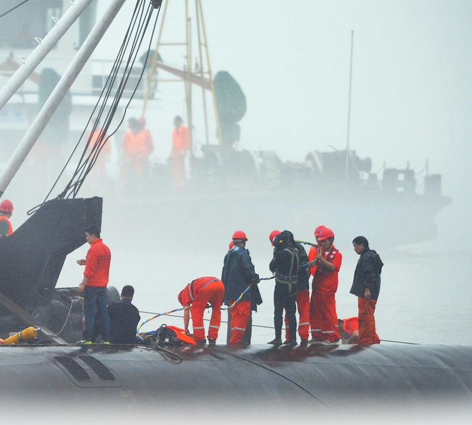

地震、爆炸、疾病、踩踏…当灾难毫无征兆的袭来，伤痛从未平息。一次次生命的逝去，除了悲痛还给我们留下了什么?

天津港爆炸
8月12日
天津滨海新区发生爆炸，165人遇难8人失联，17000多户居民受损。
8月12日22时50分
天津消防中心接到多个报警电话，称天津港内起火。
8月12日23时34分6秒
天津滨海新区发生爆炸，165人遇难8人失联，17000多户居民受损。
8月13日凌晨1点
天津滨海新区发生爆炸，165人遇难8人失联，17000多户居民受损。
8月16日上午
天津滨海新区发生爆炸，165人遇难8人失联，17000多户居民受损。
9月9日
天津滨海新区发生爆炸，165人遇难8人失联，17000多户居民受损。
9月25日
天津滨海新区发生爆炸，165人遇难8人失联，17000多户居民受损。
8月12日
天津滨海新区发生爆炸，165人遇难8人失联，17000多户居民受损。
上海踩踏事件
这本该是场相聚和狂欢。2015跨年夜，当人们前往外滩等待烟花时大抵不会想到悲剧正在靠近。拥挤、踩踏；36死、49伤；年轻人。当这些字眼呈现在眼前，悲痛惋惜之余，节庆安全更应被关注。



东方之星沉船
记录伤痛，是对生命致敬，而记录喜悦，是对付出致敬。为和平而战的军人、为科技奉献的研究者、为国家荣誉苦练的运动员，谁不是值得骄傲的国之耀？

抗战70周年纪念
9月4日，中国举办抗战胜利70周年阅兵，这是第一次非国庆阅兵，并首次有国外军队参与。
9月3日，中国举办抗战胜利70周年阅兵，这是第一次非国庆阅兵，并首次有国外军队参与。
9月3日，中国举办抗战胜利70周年阅兵，这是第一次非国庆阅兵，并首次有国外军队参与。
9月3日，中国举办抗战胜利70周年阅兵，这是第一次非国庆阅兵，并首次有国外军队参与。
9月3日，中国举办抗战胜利70周年阅兵，这是第一次非国庆阅兵，并首次有国外军队参与。
9月3日，中国举办抗战胜利70周年阅兵，这是第一次非国庆阅兵，并首次有国外军队参与。
9月3日，中国举办抗战胜利70周年阅兵，这是第一次非国庆阅兵，并首次有国外军队参与。
9月3日，中国举办抗战胜利70周年阅兵，这是第一次非国庆阅兵，并首次有国外军队参与。
屠呦呦
当2015年度诺贝尔生理学或医学奖宣布的时候，中国人又一次沸腾了，中国药学家屠呦呦凭借青蒿素对治疗疟疾的贡献获奖。这不仅是中国的成就，更让世界认识蕴涵于传统中医药中的宝藏。

2015年，有喜亦有悲，喜悲之间，其实很多时候不过立场不同而已。激流总好过死水，奋进总好过安详。能争能鸣，至少说明我们在路上。
股市
2015年，股市关键词里少不了过山车、上天台、关灯吃面，从四月一路牛市飙升破5000点，到六月几天之内各股接连停牌，国家连续降准降息，无论是否入市，其中的辗转曲折都让人记忆犹新。
专车
如今“打个专车”成为很多人的习惯，关于专车的讨论也一直在继续。从1月交通部首次使用专车一词，到10月上海颁发首张专车平台牌照，再到发布网络约车意见稿，专车的未来还要且行且看。
穹顶之下
2015年2月的最后一天一段名为《穹顶之下》的雾霾深度调查在网络疯转，2天播放近3亿次。关于雾霾的话题总是能引起最多人的共鸣，但在甚嚣尘上的讨论背后，我们什么时候才能战胜雾霾？


谢谢观看
首页